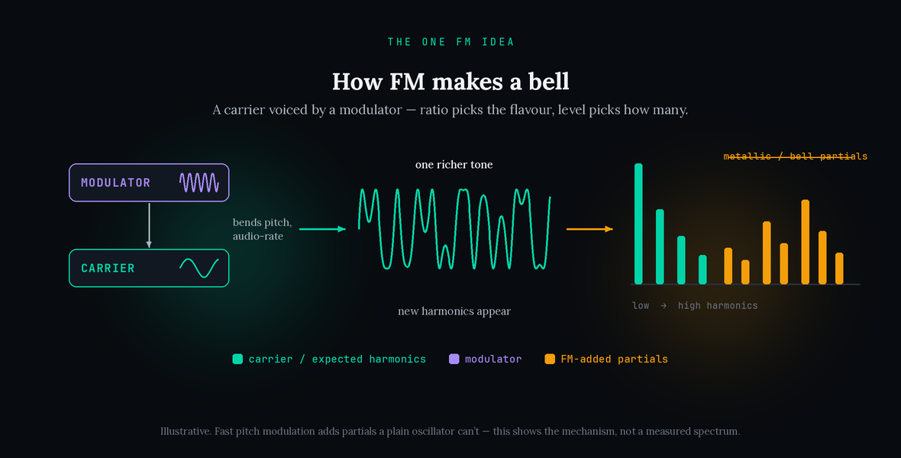
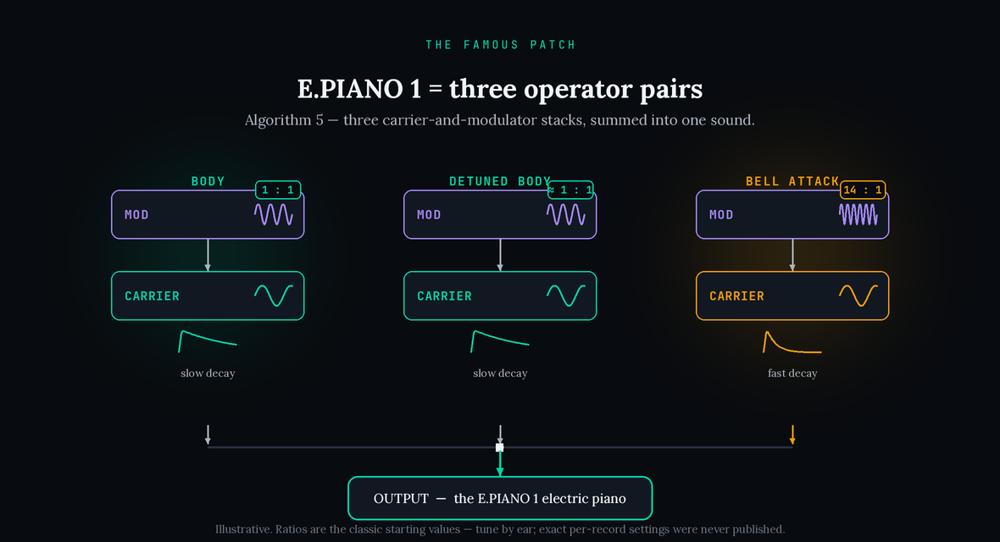
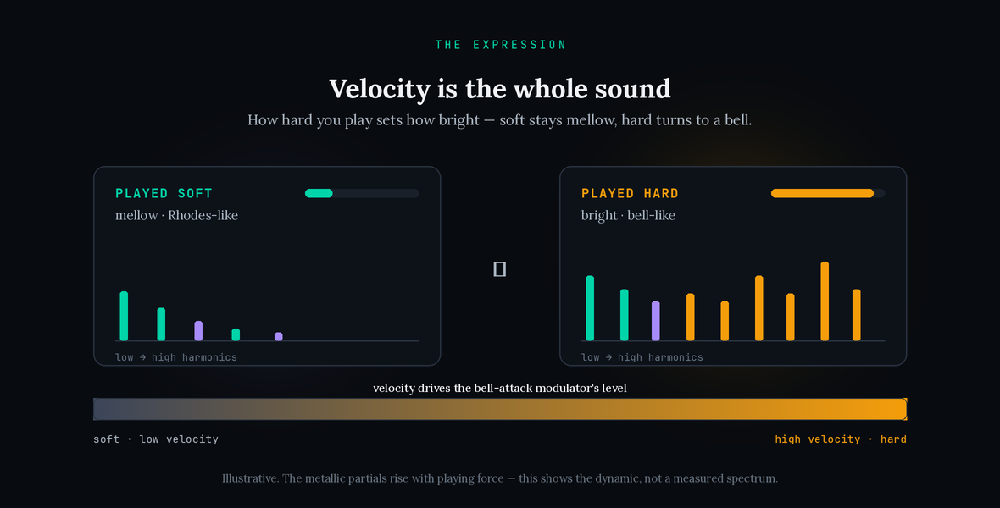

Close your eyes during almost any power ballad from the mid-1980s and you will hear it: a glassy, bell-tinged electric piano, soft and breathy under the verses, chiming and bright when the singer leans in. It sounds like a Fender Rhodes that has been polished until it sparkles — and it is not a Rhodes at all. It is a single factory preset, called E.PIANO 1, on the Yamaha DX7, and it is made entirely with a kind of synthesis almost nobody understood at the time. This guide rebuilds that sound honestly: what the DX7 actually is, why FM makes bells where analog synths made buzzes, how the famous patch is put together, and how to get all of it out of a free synth you can download in five minutes. Like the supersaw and the 80s gated-reverb snare, the DX7 piano is far more myth than mystery once you know where to look.
The Yamaha DX7 (released 1983) was the first commercially successful digital synthesizer, and it generated its sound with FM synthesis, a technique developed by John Chowning at Stanford University and licensed to Yamaha. Its most famous sound is the factory preset E.PIANO 1, which sits at patch position 11 and is built on the DX7’s algorithm 5 (three carrier-and-modulator pairs). The DX7 was used on roughly 40% of the number-one singles on the 1986 US Billboard Hot 100; a peer-reviewed study (Lavengood, 2019) found the E.PIANO 1 setting specifically on 61% of that year’s R&B #1s and 42% of the top country hits. Playing softer sounds mellow and Rhodes-like, harder sounds brighter and bell-like (velocity controls brightness), and a chorus is commonly added to bring it to life. The electric piano in the Twin Peaks theme was confirmed as a DX7/TX7 by its player, Kinny Landrum, in a public Q&A. Sources: Wikipedia “Yamaha DX7”; Lavengood, Journal of Popular Music Studies 31(3), 2019; Reverb Machine “Exploring the Yamaha DX7”; Computer History Museum profile of John Chowning.
That E.PIANO 1 was simply “designed to emulate a Fender Rhodes.” The honest picture is subtler: it was reportedly conceived as an FM replacement for the Dyno-My-Piano–modified (brightened) Rhodes and filled the same role in arrangements — but it is brighter and glassier than a real Rhodes, and by several accounts it became popular precisely because it does not sound like one. Also genuinely disputed: on several famous ballads — including Whitney Houston’s “Greatest Love of All,” “Saving All My Love for You” and “I Have Nothing” — sources disagree over whether the electric piano is a DX7, a Dyno-modified real Rhodes, or a layer of both. We name the debate rather than pretend it is settled. Sources: Reverb Machine “Exploring the DX7, Part Two”; MusicRadar; CultureSonar; Vintage Synth Explorer forums.
The exact operator ratios, output levels and envelope times used on any specific record beyond the stock patch. Whenever a producer edited E.PIANO 1, those edits are undocumented; so any per-record patch sheet you find online — and any specific number in this guide — is a modelled reconstruction, a defensible estimate rather than a documented setting. Treat it as a starting point for your ear, not gospel.
It’s FM, not a warmed-up Rhodes
The single most useful thing to understand about the DX7 electric piano is that there is no piano in it, and no Rhodes either. There is no recording of a tine being struck, no sample of a felt hammer, nothing acoustic at all. The entire sound is built from a handful of pure sine waves bent into shape by a process most keyboard players in 1983 found completely baffling. Producers who go hunting for the “right Rhodes plugin” to nail this sound are looking in the wrong family of instruments, because the character does not come from an electromechanical piano — it comes from FM synthesis, and once you grasp the one idea underneath it, the sound stops being mysterious.
This is the opposite of a sound like the reese bass, where the character lives in detuned oscillators beating against each other, or the acid squelch of a 303, where it lives in a resonant filter played live. The DX7 piano has no filter doing the work and no detuned analog swarm. Its brightness and its bell-like ring are baked into how the tone is generated in the first place. That is why a subtractive synth — the kind that starts with a rich waveform and carves it down — struggles to imitate it convincingly: you are trying to sculpt, with a chisel, a shape that was grown a completely different way. Reach for an FM instrument instead and the sound almost falls out of the box.
So this guide is structured around that reframe. We will spend a little time on where the sound came from, because the history explains why it sounds the way it does, and then we will learn the one FM principle that unlocks it. After that the famous patch itself — three simple ingredients — becomes obvious, and recreating it is genuinely quick. If you have rebuilt a signature sound with us before, you know the pattern: the part everyone obsesses over is rarely the part that matters, and the real secret is usually simpler and stranger than the folklore.
From Chowning’s equation to a decade of ballads
The story begins not in a music studio but in a lab. In the late 1960s, John Chowning, a composer and researcher at Stanford, was experimenting with digital sound and noticed that when he used one oscillator to rapidly modulate the pitch of another, he did not get vibrato as expected — he got entirely new harmonics, and with them, metallic and bell-like timbres that were extraordinarily hard to make any other way. Stanford patented the technique, shopped it to American organ makers who turned it down, and eventually licensed it to Yamaha, who spent roughly a decade turning the maths into an affordable instrument. The result, released in 1983, was the DX7.
It changed everything almost overnight. It was digital when the market was analog, it sounded like nothing else, and at under two thousand dollars it was within reach of working musicians. It sold in numbers no synth had approached before. But it had a catch: programming it was famously opaque — a tiny screen, a membrane keypad, six “operators” wired together in thirty-two “algorithms” that few people understood. So the vast majority of players did the obvious thing and reached for the factory presets. And the most irresistible of those was the electric piano, a sound so evocative and so easy to drop into a ballad that it spread through pop, R&B and country like wildfire.
The ubiquity is genuinely documented, not folklore. The DX7 appears on around 40 percent of the number-one singles on the 1986 US Billboard Hot 100. A peer-reviewed study by Megan Lavengood went further and tracked the E.PIANO 1 setting specifically, finding it on 61 percent of that year’s R&B number ones and 42 percent of the top country hits. Phil Collins, Whitney Houston, Chicago, Tina Turner’s comeback records, the Twin Peaks theme, and much later Bruno Mars all reached for it. That is the sound you are recreating: not an obscure patch, but arguably the most-heard electric piano in the history of recorded pop — and, like the Daft Punk robot voice, one whose real mechanism is far less mystical than its cultural weight suggests.
It is worth pausing on the Rhodes question, because it is the most persistent myth about this sound. The DX7 electric piano was not chasing a plain Fender Rhodes; by several accounts it was modelled on the Dyno-My-Piano — a popular early-’80s modification that brightened a Rhodes’s tines and ran it through chorus, giving it a sparklier, more hi-fi voice than the mellow instrument of the ’70s. That is why the DX7 version sounds so crystalline: its reference point was already a brightened Rhodes, and FM then pushed the brightness further still. The confusion this created runs deep — on several landmark ballads, engineers and enthusiasts still disagree over whether a given electric piano is a DX7, a Dyno-modified Rhodes, or the two layered together, because on a finished, chorused record the fingerprints blur. For a producer, the practical takeaway is freeing: you are not trying to match one instrument exactly, you are trying to land in a well-populated family of bright, chorused electric pianos, and an FM patch puts you squarely inside it.
How FM makes a bell: carrier and modulator
Here is the one idea that unlocks everything, and it is worth reading slowly because it is the actual transferable skill. In FM synthesis, every building block is a plain sine wave, called an operator. Some operators you hear directly — those are carriers. Some operators you do not hear on their own; instead they are wired to rapidly wobble the pitch of a carrier — those are modulators. That is the whole vocabulary: a carrier is the voice, a modulator is what shakes it.
When a modulator wobbles a carrier slowly, you hear vibrato — a gentle waver in pitch. But when the modulator wobbles the carrier very fast — at audio rate, thousands of times a second — something else happens entirely. The ear stops hearing the wobble as pitch movement and starts hearing new frequencies that were not in either oscillator to begin with. Feed a carrier a modulator and you conjure a whole family of extra harmonics out of two simple sine waves. Crucially, the ratio between the modulator’s frequency and the carrier’s decides which harmonics appear. When the modulator sits at a low whole-number ratio to the carrier, you get warm, harmonic, musical tones. When it sits at a high or non-integer ratio, you get clangorous, metallic, bell-like partials — the sound analog synths could never quite manage. That single relationship is why FM excels at bells, tines, glass, mallets and electric pianos.

And there is a second control that matters as much as the ratio: how loud the modulator is. Turn a modulator’s output up and it adds more harmonics, making the tone brighter and more complex; turn it down and the tone softens back toward a pure sine. This is the lever the DX7 piano leans on hardest, because if you can make the modulator’s level rise and fall — over the course of a note, or with how hard you play — you get a sound that brightens and mellows dynamically, exactly like a struck string. Grasp those two ideas — ratio chooses the flavour of harmonics, level chooses how many — and you have not learned one patch. You have learned every FM bell, mallet and electric piano there is, which is the entire point of learning it as a principle rather than a preset.
If the maths still feels abstract, here is a way to feel it rather than calculate it. Imagine bending a single note’s pitch up and down by hand, faster and faster. Slowly, you hear a wobble. Speed it up past the point your ear can track the individual movements and the wobble stops being movement and becomes colour — a shimmer of new tones around the original. FM does exactly that, thousands of times a second, with mathematical precision, and the “how far” you bend is the modulator’s level while the “in what proportion” is the ratio. This is also why FM sounds can turn harsh so easily: push the modulator level high and you generate a dense thicket of harmonics that quickly becomes clangorous. The electric piano stays musical because its body pair uses a gentle 1:1 ratio and only the brief attack pair is allowed to get bright — and even then, only for a fraction of a second. Restraint, not intensity, is what makes FM sound expensive.
Inside E.PIANO 1: three operator pairs
Now the famous patch itself makes sense. E.PIANO 1 is built on the DX7’s algorithm 5, which is simply three independent carrier-and-modulator pairs stacked together and summed. Think of it as three little FM voices playing at once, each contributing one part of the sound. You do not need a DX7 to build this; any FM synth with a few operators will do, and understanding the three jobs is what lets you rebuild it anywhere.

The first pair is the body. A carrier and its modulator sit at roughly a 1:1 ratio — the modulator matched to the carrier — with a slow, piano-like decay. A 1:1 ratio adds harmonics that stay musical and warm rather than clangy, so this pair produces the mellow, slightly hollow, sustaining tone that forms the heart of the sound. On its own it already reads as a soft electric piano. The second pair is a near-copy of the first, very slightly detuned. Two body voices at almost the same pitch beat gently against each other, and that beating is what gives the patch its subtle width and movement even before any effects — the same principle that fattens a detuned analog stack, used here with restraint.
The third pair is the magic: the tine attack. Its modulator is tuned to a high ratio — famously around 14:1 — and given a fast-decaying envelope, so it produces a bright, metallic, bell-like “ping” that appears at the very start of each note and dies away quickly. That short high-ratio burst is the glassy strike you picture when you think of this sound; it is the electronic equivalent of a hammer catching a tine. Body plus body plus a fast metallic ping — that is the entire architecture, and it is why the sound feels like a piano that has been dipped in glass. If you are working in a modern FM synth like Ableton’s Operator, you set up exactly these three relationships; the numbers are a starting point to tune by ear, not sacred values, because as the sourcing box notes, the exact per-record settings were never published.
One subtlety is worth calling out, because it trips people up and it is where the folklore gets messy. There is more than one way to build an electric piano on a DX7 — Yamaha’s own clinicians sometimes taught the idea using a different algorithm as a blackboard example — but the specific factory patch that soundtracked the decade, E.PIANO 1, is the algorithm-5 arrangement of three pairs described above. When you are recreating the sound rather than merely an FM piano, that distinction matters: aim for the three-pair structure, and treat the deep-editing rabbit hole as optional. The authentic target here is genuinely the factory preset, not a heavily reprogrammed variant, which is unusual and rather liberating — for once the “correct” version of a legendary sound is the one that came in the box, and your job is to understand it well enough to rebuild it, not to out-clever it.
Velocity is the whole expression
If there is one thing that separates a convincing recreation from a lifeless one, it is this section, and most tutorials skip it. On the DX7 electric piano, how hard you play controls how bright the note is — and that dynamic is not a nice extra, it is the soul of the sound. The mechanism is exactly the FM lever from two sections ago: velocity is wired to the level of that third, high-ratio tine-attack modulator. Play softly and the tine modulator stays quiet, so you hear mostly the warm 1:1 body — mellow, rounded, genuinely Rhodes-like. Play hard and the tine modulator jumps up, flooding the note with bright metallic partials — the bell-like strike snaps forward.

This is why the real thing feels alive across a performance and why a static “DX7 piano” sample so often sounds flat and dated by comparison: the sample froze one brightness, but the instrument breathes between mellow and bright with every touch of the hand. It is also, incidentally, why the sound survived long enough to be reappraised — players who dismissed it as cheesy were often reacting to lazy, one-dynamic use, not to the expressive instrument underneath. When you recreate it, spend real time here. In your FM synth, route velocity to raise the output of the bright attack operator, and set the amount generously enough that a soft-to-hard sweep audibly travels from dull to gleaming.
Then, crucially, play it like a piano. Program or perform genuine dynamics — softer under the verses, harder in the chorus — and the patch will do the emotional work for you, brightening as the song lifts. A ballad accompaniment built this way needs almost no automation; the expression is already in the velocities. Get this wiring right and even a rough approximation of the three operator pairs will sound “right,” because the ear reads the dynamic brightness as authenticity. Get it wrong — a fixed, uniform brightness — and even a perfect static patch will sound like a cardboard imitation.
The chorus that brings it to life
There is one finishing touch that nearly every record adds and that transforms the dry patch from “close” to “that’s it”: a chorus effect. The raw FM electric piano, straight out of the synth, is a little thin and a little static — clean, but two-dimensional. A light stereo chorus widens it, adds a slow shimmer, and gives it the wet, glossy, floating quality that defines the sound in your memory. It is such a consistent part of the finished tone that many people effectively hear the chorus as the DX7 piano, without realising the two are separable.
The setting that matters is restraint. You are not trying to make an obvious swirling effect; you are trying to add width and a gentle animation. A modest mix — somewhere around a quarter of the signal — with a slow-to-moderate rate is the classic territory, enough to hear movement without it becoming seasick. Keep the stereo width sensible so the sound still holds together in mono, since a chorus pushed too wide can hollow out the centre and cause problems when the mix folds down. If your DAW has a stock chorus, it will do this perfectly; this is not a place that rewards a boutique plugin.
It is worth noting that chorus is where a lot of the era’s sound blur together, which is part of why the Rhodes-versus-DX7 debates in the sourcing box are so hard to settle: a chorused, EQ’d electric piano on a finished record hides many of the fingerprints that would tell you which instrument made it. For your purposes, that is liberating rather than frustrating — it means a well-built FM patch with a tasteful chorus will sit in a mix indistinguishably from the records, and nobody will ever run a forensic analysis on your ballad. Build the tone, add the shimmer, and move on.
Recreate it: a free FM synth first, then the shortcuts
Here is the genuinely good news, and it is unusual for a classic sound: the free route is not a compromise, it is arguably the most authentic route. Dexed is a free, open-source emulation of the DX7 that loads original DX7 patch files directly, which means you can call up something equivalent to E.PIANO 1 and then reverse-engineer what you are hearing operator by operator. It is the best learning tool there is for this sound, because you can see the exact three-pair structure laid out in front of you. Download it, load an electric-piano patch, and poke at the operators until the anatomy above clicks.
To build the sound from scratch — which is where the real understanding lives — the steps are simple in any FM synth, including Ableton’s Operator or any instrument with a few operators and adjustable ratios. Set up a carrier-and-modulator pair at a 1:1 ratio with a slow, piano-like decay for the body. Duplicate it and detune the copy very slightly for width. Add a third pair with the modulator at a high ratio — start around 14:1 — and a fast-decaying envelope for the bright tine attack. Then route velocity to the level of that third modulator so playing harder brings out the ping. Finally, add a light chorus after the synth. That is the whole recipe, and it maps one-to-one onto the anatomy sections above. Tune every number by ear; the ratios are launch points, not law.
If you want a paid shortcut with a friendlier interface and modern extras, Arturia’s DX7 V and Native Instruments’ FM8 both model the DX7 engine and come loaded with ready-made electric pianos, and hardware like the compact Korg Volca FM or Korg Opsix gives you knobs to shape FM in real time. But none of them will sound more “real” than Dexed does, because Dexed is the engine. This is the rare case where the correct advice is to start free and stay free unless you specifically want the workflow. Any of the instruments in our best synth plugins roundup that offers FM will get you there, and if you are choosing between the two most popular soft synths, our Serum 2 vs Vital comparison covers which one suits you — both can do FM, though a dedicated FM instrument makes this particular sound easier. Our Serum 2 and Vital walkthroughs show how to reach the FM controls in each.
The same idea anywhere: you now own every FM bell
The reason it is worth learning this as a principle rather than a preset is that the principle is enormous and the preset is tiny. Once you can hear FM — a carrier voiced by a modulator, brightness rising and falling with modulator level — you own far more than one ballad piano. Nudge the ratios and envelopes and the very same architecture gives you tubular bells, marimbas and vibraphones, glassy synth pads, harp-like plucks, tuned percussion, and the crystalline lead and bell tones that define whole genres. The DX7 electric piano is simply the most famous member of an entire family you can now build at will.
That transfer is exactly why FM is having a renaissance in modern production. The bright, digital, slightly nostalgic sheen of FM sits at the centre of synthwave and retro-leaning pop, where producers deliberately reach for that 1980s digital character; and lighter FM electric pianos still roll through modern R&B and house ballads and soulful trance breakdowns. Learn the mechanism and you can deploy it deliberately across all of them, rather than hunting for a preset that only ever gives you one flavour.
There is a compositional lesson tucked inside the technical one, too. The DX7 piano taught a generation that a sound could be expressive through dynamics alone — that wiring brightness to touch turns a static timbre into an instrument that responds. That idea travels far beyond FM: any time you connect how hard a part is played to how bright or open it sounds, you get music that breathes. It is the difference between a synth line that feels typed in and one that feels performed. The DX7 piano is the most famous teacher of that lesson, but the lesson outlives the instrument — which is precisely why it is worth more than the patch.
What you can’t buy — and the taste question
Honesty demands two limits, and neither is technical. The first is small: an original DX7’s early digital converters and its exact factory calibration add a faint character that emulations approximate rather than clone bit-for-bit — but this is genuinely inaudible in a mix, and even devoted owners disagree about whether it matters. Unlike some recreations, there is essentially nothing physical here you cannot buy or download, because the instrument was digital from the start. Dexed running the same patch data is about as close to “the real thing” as a recreation ever gets.
The second limit is the honest one, and it is about taste rather than gear. This sound was so overused in the 1980s that it triggered a backlash; for years the DX7 electric piano was shorthand for everything cheesy about the decade’s production. That reputation has softened as producers mined the era for inspiration, but the caution still stands: the patch is a cliché if you lean on it, and a beautiful, evocative colour if you use it deliberately. The thing you cannot download is judgment about when to reach for it — when its nostalgic sheen serves the song and when it dates it.
Our advice is to treat it the way the best records did: as a specific emotional colour, not a default piano. Used with genuine dynamics, a tasteful chorus, and a reason to be there, it is one of the most instantly moving sounds in pop. Used as wallpaper on every track because it is easy, it becomes the thing people mock. The instrument is free; the restraint is the part you develop yourself, and it is worth more than any operator setting.
Do you need to clear anything?
No. Recreating the DX7 electric piano from scratch — your own FM patch, your own performance, your own chorus — is entirely your own production, and there is nothing to clear. You are not sampling a record; you are rebuilding a sound using a synthesis technique and, often, an instrument (Dexed) that is free and open-source. (The only time rights would enter the picture is if you sampled an actual recording that used a DX7, which is a completely different task and not what this is.) Build FM electric pianos freely and put them in whatever you like.
Build the skill: 3 drills
Run these in order. The first proves how few ingredients the sound really has; the second trains the velocity-to-brightness wiring that carries the expression; the third forces you to build the tine from raw operators so FM stops being mysterious.
- Download Dexed (free) and load a factory electric-piano patch. Play it with soft and hard dynamics and listen to how the brightness changes with your touch.
- Find the six operators. Mute them one at a time and listen. Identify the warm body pair and the bright, fast-decaying attack pair — you should be able to hear the tine “ping” disappear when you mute it.
- Turn the bright attack operator’s level all the way down, then all the way up. Notice that you are sliding between “dull Rhodes” and “glassy bell” with a single control. That control is the whole sound.
- In Dexed or any FM synth, route velocity to the output level of the bright attack operator. Set the amount high enough that soft notes are mellow and hard notes gleam.
- Play a slow chord progression, deliberately softer in the verses and harder in a “chorus.” Hear the patch brighten as you dig in, with no automation at all.
- Now disconnect the velocity routing and play the same thing. Notice how flat and dated it sounds with a fixed brightness. That comparison is the entire lesson of this sound.
- In Ableton’s Operator (or any from-scratch FM synth), build a carrier-and-modulator pair at a 1:1 ratio with a slow decay. This is your body — it should already read as a soft EP.
- Add a second body pair, detuned very slightly, for width. Then add a third pair with the modulator at roughly 14:1 and a fast-decaying envelope for the metallic attack.
- Route velocity to that third modulator’s level, add a light chorus, and tune every ratio and time by ear until it sits next to a reference. You have now built a decade of ballads from six sine waves.
The mistakes that make it sound wrong
The most common failure is treating it as a subtractive-synth problem — reaching for a sampled Rhodes or a saw-and-filter patch and trying to EQ it into an FM sound. It will never quite arrive, because the bell-like partials are made by FM and cannot be carved into a subtractive tone. Start in an FM instrument and the sound is easy; start in the wrong family and it is impossible. The second failure is a fixed, uniform brightness — skipping the velocity-to-brightness wiring — which leaves you with a lifeless, one-dimensional patch that sounds like the cheesiest use of the original rather than the expressive instrument underneath.
The third failure is a dry signal with no chorus, which sounds thin and static next to the records; add a modest stereo chorus and it blooms. The fourth is overusing it — putting the unmistakable patch on everything until it stops being evocative and starts being a cliché. And the last is chasing exact operator numbers from a forum post as though they were gospel; as the sourcing box explains, the per-record settings were never published, so tune by ear against a reference instead. When you place the finished sound in a mix, treat it like any electric piano: carve a little room for the vocal, keep the chorus sensible in mono, and let its dynamics do the emotional work rather than fighting them with compression. The gated snare and the DX7 piano often share a record; together they are practically a decade in two sounds.
Frequently asked questions
FM synthesis, not a sampled Rhodes. A warm body tone (a carrier and modulator at a 1:1 ratio) is combined with a bright, fast-decaying metallic “tine” attack (a modulator at a high ratio), and velocity is wired to control how much of that bright attack you hear. A light chorus finishes it. That is the whole recipe behind the factory preset E.PIANO 1.
No. It is generated by FM synthesis and contains no recorded Rhodes at all. It was reportedly intended as an FM replacement for the (Dyno-My-Piano–modified) Rhodes and filled the same role in arrangements, but it is brighter and glassier, and it became loved precisely for not sounding like a real Rhodes. On some famous ’80s ballads it is genuinely debated whether the electric piano is a DX7, a modified Rhodes, or a layer of both.
The factory preset named E.PIANO 1, which sits at patch position 11 and is built on the DX7’s algorithm 5 (three carrier-and-modulator pairs). It is the single most recognisable sound the DX7 made and the one heard across a decade of ballads.
Yes, more completely than almost any other classic sound. Dexed is a free, open-source DX7 emulation that loads the original patches directly, and Ableton’s Operator or any FM instrument can rebuild the tone from scratch. The free route is not a compromise here — it is the authentic instrument.
In FM synthesis every “operator” is a sine wave. A carrier is the operator you hear; a modulator is an operator that rapidly varies the carrier’s pitch. When the modulator’s frequency is close to or a whole-number multiple of the carrier’s, that rapid variation adds new harmonics, producing metallic and bell-like partials that subtractive synthesis cannot easily make.
Because velocity is wired to brightness. On the DX7 electric piano, playing softly hides the bright metallic attack and leaves a mellow, Rhodes-like tone; playing hard brings the bell-like “ping” forward. That dynamic response is what makes the patch feel expressive and alive rather than static, so recreating the velocity routing matters as much as the tone itself.
Very. The dry FM patch is a little thin and static; a light stereo chorus is what gives the classic sound its wide, shimmering, wet quality. Most records add it, and adding a modest chorus (around a 25 percent mix) is usually the difference between a patch that sounds close and one that sounds right.
Extremely. The DX7 was used on around 40 percent of the number-one singles on the 1986 US Billboard Hot 100, and a peer-reviewed study (Lavengood, 2019) found its E.PIANO 1 setting specifically on 61 percent of that year’s R&B number ones and 42 percent of the top country hits. It genuinely soundtracked a decade.